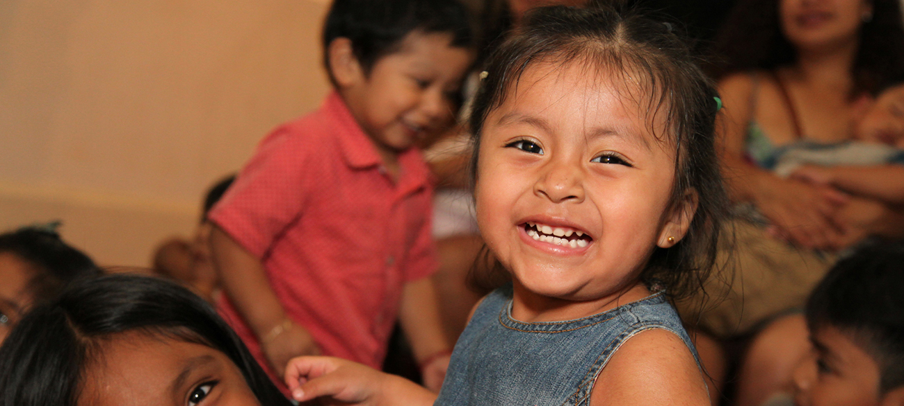
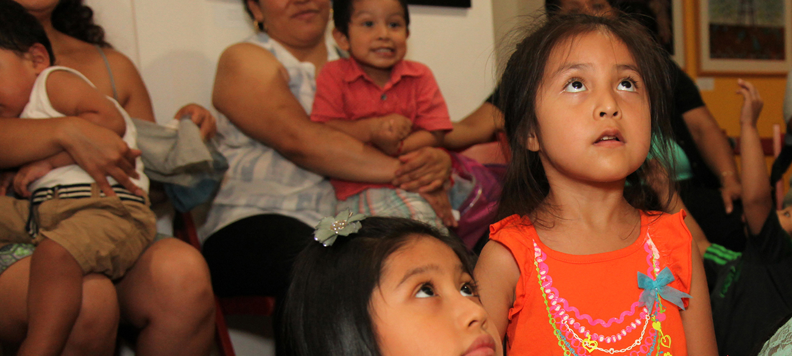
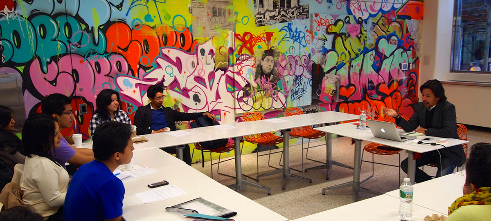

Home
Academic Path
0 to 3 Years Old
4 Years Old
5 Years Old
6 to 8 Years Old
9 and 10 Years Old
11 to 13 Years Old
14 to 18 Years Old
Adult Education
College
Grad School
About Us
Resources
Glossary
Resources
Related Topics
Contact
0 – 3 years old
Infants and Toddlers
Research shows that reading aloud to young children promotes the development of language and other skills and helps...

4 Years Old
Pre-K: children born in 2011
Children in high quality Pre-K do better in elementary school than four-year-olds who stay at home...

5 Years Old
Kindergarten
When choosing a kindergarten program, don’t forget to think ahead. Consider both the quality of the kindergarten program...
6, 7 and 8 year olds
First, Second, and Third Grades
The early elementary school years are a good time to consider whether your child’s school is preparing them for the future...
9 and 10 year olds
Fourth and Fifth Grades
4th grade is the time for parents and students to start preparing for the middle school admissions process...

11, 12, and 13 year olds
Sixth, Seventh and Eighth Grades
Between 6th grade and 7th grade, parents and students should start preparing for high school admissions...
14 to 18 year olds
Ninth to Twelfth Grades
Students and their families should schedule a ‘team’ meeting with a guidance counselor in 9th grade to find out about college...
Adult Education
Sixth, Seventh and Eighth Grades
Between 6th grade and 7th grade, parents and students should start preparing for high school admissions...
College
Sixth, Seventh and Eighth Grades
Between 6th grade and 7th grade, parents and students should start preparing for high school admissions...
Grad School
Sixth, Seventh and Eighth Grades
Between 6th grade and 7th grade, parents and students should start preparing for high school admissions...